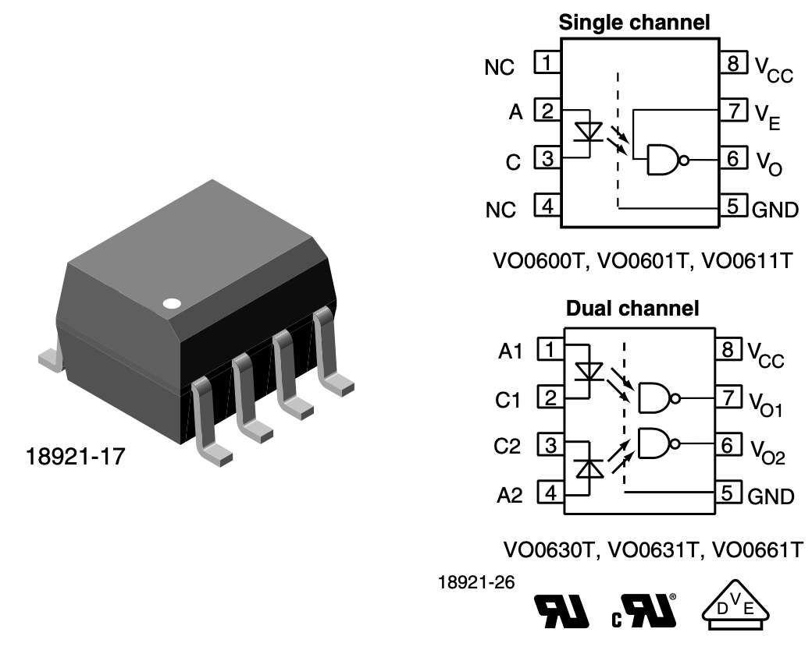
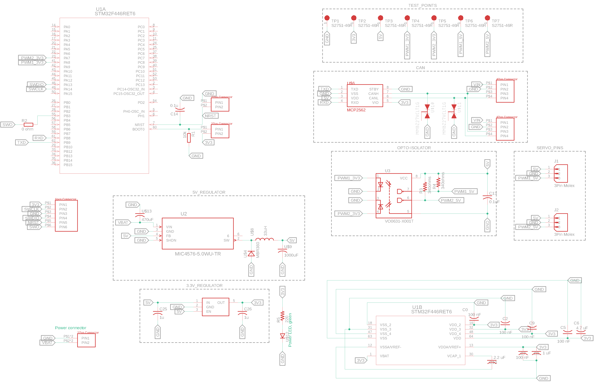
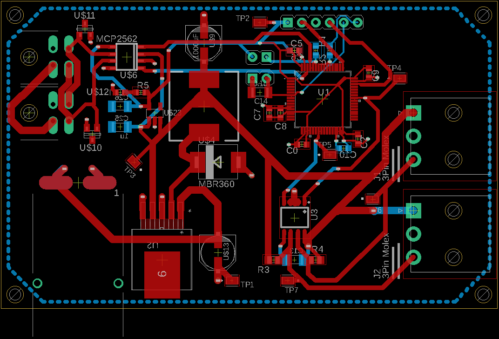

Cornell Mars Rover: Servo Board
The goal was to create a general servo control board that could be used for positional and continuous servos on the Cornell Mars Rover. The control board was designed to control any combination of 2 servos at a time.
The general timeline was to research how a servo is controlled, find the components necessary to build the board, build the schematic for the printed circuit board(pcb), print the pcb, solder the components onto the pcb, then write up the code and test it.
Servo motors are generally controlled by a pulse width modulation(PWM)) signal. Positional servos translate a PWM signal to a specific angle while continuous servos translate the PWM signal to a positive or negative velocity.
For most of the rover, we use an STM32 series microcontroller. For the servo board's purpose, this microcontroller can output a PWM signal. The main issue is that the STM32 outputs this signal at 3.3V, and generally, the servos need a 5V signal.
To step the PWM signal up to the correct voltage, I had to find an opto-isolator. Opto-isolators are generally used to decouple signals from their voltages so that a surge in one part of the system does not affect the rest of the system. We take advantage of this decoupling to boost the signal from 3.3V to 5V. I found an opto-isolator that had dual channel capabilities, so only one would be needed per board. This made planning the schematics much easier.
There were other communication components, but the layout and functionality was standard across all boards and this was designed/programmed by our subteam lead. After assuring that the components were compatible, I made the rough schematic in AutoDesk Eagle.
After creating the schematic, AutoDesk Eagle generates a general board with all the components, but you must move the components around and add the traces. The traces are the red/blue lines that are used to connect power and signals to all the components. Theses traces are a copper layer in the center of the PCB.
After printing the PCB and buying the components, I started soldering the board. This was definitely the longest process of the project as we had to solder everything by hand and we were trying to make 4 copies of the board. The debugging process was complex as it was difficult to test whether there was a software issue or a hardware issue(shorting, solder not contacting, etc.). Below are a few pictures of the debugging process of testing a servo board that failed to control one of its motors. The general debugging process was using an oscilloscope to test the PWM generation, a multimeter to test connections, and soldering and resoldering components to ensure a solid connection. At this point, the software was confirmed to work on the functional boards.